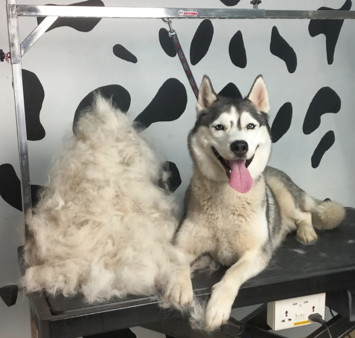
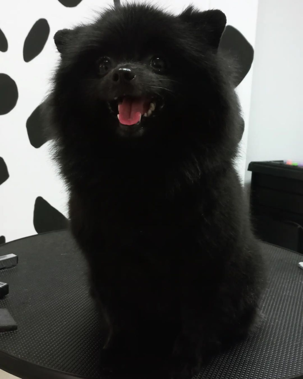

В наше время услуги парикмахера для собак очень востребованы. Стрижка собак – самая популярная процедура груминга. Популярность такой услуги обусловлена не только элементарными требованиями обычной гигиены, но и заботой о здоровье и комфорте вашей собаки.
Стрижка собак
Парикмахерская для собакПрофессиональный парикмахер собак в Ивано-Франковске
ЗаписатьсяКак подстричь собаку
Что нужно знать
Всем ли собакам нужна стрижка?

Стрижка шерсти нужна не всем породам собак. Например, породы, шерсть которых содержит остевой волос, стричь не рекомендуется. Это следующие породы:
- • Ретриверы;
- • Самоеды;
- • Нимецкие овчарки;
- • Лабрадоры;
- • Маламуты.
Не имеющие подшерстка породы (ирландский водяной спаниель, пудель), так же и породы, обладающие шнуровой, курчавой шерстью (Командор, Бергамская овчарка) принято вычесывать и использовать тримминг и стриппинг.
Когда нужно стричь собаку?
Обычно, подравнивать шерсть, можно начинать с 3-х месяцев. Но, возможно и раньше (допустим, у вашего питомца длинная шерсть и начинают формироваться колтуны). Взрослых собак нужно стричь по мере необходимости. Лучше, если первая стрижка будет проводится в парикмахерской для собак или груминг-салоне.
Виды стрижки собак
Можно выделить три, основных вида стрижки:
-
Гигиеническая стрижка - это самая распространенная стрижка, максимально экономный вариант. Задача гигиенической стрижки собаки – ухоженный и опрятный внешний вид, профилактика паразитов, поддержание общего здоровья собаки.
-
Модельная стрижка - на самом деле, не имеет каких-то определенных особенностей, кроме учета эстетических пристрастий хозяина. То есть, это такой «вольный стиль», не подверженный каким-либо условностям (ограничение стандартов породы и т.д.). Все, что нужно – желание хозяина и хороший парикмахер с качественным инструментом.
-
Шоу-трим (выставочная стрижка) – в отличии от предыдущей, этот вид стрижки собак имеет жесткие условия и ограничения требованиями стандартов породы. Любые отклонения здесь неприемлемы. Поэтому доверить выставочную стрижку вашего питомца, лучше хорошему профессионалу.
Техники выполнения стрижек

- • Клиппервек - стрижка специальной машинкой. Особенность этого способа – результат стрижки, а именно короткая (1,5-5мм) шерсть. Данный способ подходит для разных пород животных, может быть выполнен как равномерно, так и с переходами, удобен для удаления колтунов.
- • Флэтвек - особенность данных стрижек — это короткая шерсть с плавными и незаметными переходами в длинную. Так же подходит для многих пород, очень органично смотрится, например, у йоркширских терьеров. Выполняться может как машинкой, так и ножницами, но для плавных переходов удобнее использовать ножницы.
- • Блендинг - особенность такого способа использование филировочных ножниц. Это прореживание шерсти разной длинны. Обычно, выступает заключительным этапом стрижки собаки. Придает стрижке законченный вид.
- • Топ-нот - особенность такой техники использование всевозможных бантов, заколок и т.д. Применяется как в модельных стрижках, так и в шоу-триме для длинношерстных собак. Так же может быть обязательным элементом на выставке для собак с длинной шерстью и выпуклыми глазами.
Если собака не хочет стричься?
Что делать, если собака нервничает при виде инструментов или при попытке провести какие-либо манипуляции со своей шерстью? Необходимо отложить процедуру на несколько дней. В течении которых нужно осторожно, не пугая собаку, постоянно с ней общаясь и угощая её любимым лакомством имитировать процесс стрижки. Как показывает практика – через несколько дней (возможно неделю) животное начинает более спокойно реагировать на знакомую ситуацию. Можно спокойно стричь.
Узнать про цены на услуги "стрижка собак" тут. Записаться на стрижку собаки можно тут, или позвоните по номеру телефона +38(050)339-1000
Наш адрес:
Груминг-салон
"101 ДАЛМАТИНЕЦ"
Груминг-салон
"101 ДАЛМАТИНЕЦ"
г. Ивано-Франковск,
ул. Гетмана Мазепы, 20/8 (сквер Пятница)

График работы
Понедельник: 10.00 - 21.00
Вторник: 10.00 - 21.00
Среда: 10.00 - 21.00
Четверг: 10.00 - 21.00
Пятница: 10.00 - 21.00
Суббота: 10.00 - 21.00
Воскресенье: 10.00 - 21.00